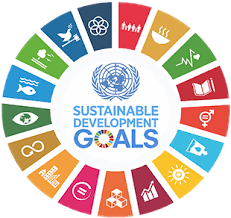

HUBUNGAN KERJASAMA DENGAN SDGs

Dari berbagai kerja sama yang telah dijelaskan, terlihat bahwa upaya bersama antar negara sangat penting untuk mencapai tujuan bersama dan mendorong kemajuan di setiap negara. Kerja sama bilateral antara Indonesia dengan Jepang dalam perdagangan kredit karbon, kerja sama regional seperti ASEAN Climate Change and Energy (ACCEPT), serta forum internasional dalam UNFCCC menunjukkan bagaimana semua negara bersatu dan bekerja sama untuk mencapai transisi menuju energi bersih dan mengatasi perubahan iklim.
Kerja sama Bilateral seperti yang tercipta antara Indonesia dan Jepang dalam perdagangan kredit karbon. Sistem kredit karbon yang diakui akan semakin mempercepat proyek pengurangan emisi dan mendukung pencapaian target net zero di kedua negara ini. Selaras dengan SDGS nomor 13 Climate Action yang menekankan pentingnya pengurangan emisi gas rumah kaca dalam menghadapi perubahan iklim.
Proyek ASEAN Climate Change and Energy (ACCEPT) yang dibentuk melalui kerja sama regional memperlihatkan pentingnya kolaborasi antar negara-negara di wilayah Asia Tenggara. Setelah lokakarya dan diskusi yang panjang mengenai kebijakan-kebijakan penggunaan energi terbarukan juga pengurangan emisi gas rumah kaca., kerja sama ini turut mendukung SDGS nomor 13 Climate Action. Negara-negara saling bekerjasama untuk menciptakan solusi kolektif dalam mengatasi tantangan iklim.
Kerja sama Multilateral seperti yang terlihat pada COP29 dalam kerangka UNFCCC, menekankan pentingnya komitmen global. Pembahasan mengenai pendanaan iklim yang mencakup negara-negara industri yang bertanggung jawab memberikan kompensasi kepada negara-negara yang terdampak. Hal ini mendorong terwujudnya SDGS nomor 13 Climate Action.